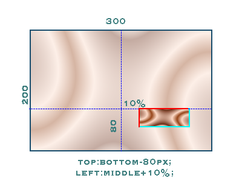

Attributes that are supported as text style definitions for imageapi_text
- font-size
-
eg:
font-size: 14px;
Must be in pixels and include units.
[default 12px] (SVG CSS2)
- fill
-
eg:
fill: #DD3333;
The hex color of the body of the text
[default #333333]
(SVG) (equiv to CSS:color)
See color
- fill-opacity
-
eg:
fill-opacity: 0.7;
A decimal between 0.0 and 1.0
[default 1, but modified by "opacity" value and color alpha]
- line-height
-
eg:
line-height: 20px;
Must be in pixels and include units.
[default auto].
- padding-top*
-
eg:
padding-top: 10px;
Transparent spacing at the top. [default 0]
- padding-bottom*
-
eg:
padding-bottom: 10px;
Transparent spacing at the bottom. [default 0]
- padding-left*
-
eg:
padding-left: 10px;
Transparent spacing at the left. [default 0]
- padding-right*
-
eg:
padding-right: 10px;
Transparent spacing at the right. [default 0]
- top*
-
eg:
top: 10px;
Offset from the top. [default centered]
- bottom*
-
eg:
bottom: 10px;
Offset from the bottom. [default centered]
- left*
-
eg:
right: 10px;
Offset from the left. [default centered]
- right*
-
eg:
right: 10px;
Offset from the right. [default centered]
- stroke
-
eg:
stroke: #00FF00;
The color of the outline.
[default none]
(SVG)
See color
- stroke-width
-
eg:
stroke-width: 2px;
Width in pixels of the stroke.
Note that this actually behaves as an outside border,
not a true outline stroke line.
Results may not be nice if larger than a few pixels.
[default none]
(SVG)
See also CSS3 text-outline
- stroke-opacity
-
eg:
stroke-opacity: 0.7;
A decimal between 0.0 and 1.0
[default 1, but modified by "opacity" value and color alpha]
- text-shadow
-
text-shadow: color xpos vpos blur;
eg: text-shadow: #666666 3px 2px 3px;
will place a dropshadow 3px right and 2px down from the text.
[default none] (blur not yet supported)
(CSS2).
(Offsets of 0 should be able to produce a "glow" effect if blur worked.)
Note that shadow only applies to the text, not the stroke - yet.
- text-shadow-opacity
-
eg:
text-shadow-opacity: 0.7;
A decimal between 0.0 and 1.0 . no official spec!
[default 1, but modified by "opacity" value and color alpha]
See color
- opacity
-
eg:
opacity: 0.7;
A decimal between 0.0 and 1.0
[default 1]
(SVG) (fill-opacity, stoke-opacity maybe later)
Elements can modify their own opacity with specific *-opacity
attributes as well as the alpha channel of the color.
This overall opacity setting multiplies over any other
opacities.
See opacity notes
- transform
-
eg:
transform: rotate(30);
- Almost unknown (proposal?),
but I THINK this is how it's supposed to work?
Units assumed to be degrees, positive values are clockwise.
- text-transform
-
eg:
text-transform: uppercase;
Note this is the CSS spec [capitalize, uppercase, lowercase].
For small-caps you need "font-variant" (unsupported)
- text-effect
-
No specification. This is a highly experimental hook to support
custom contributed effects,
such as 3d, perspective, gradient or other things.
eg: text-effect: embedded-underline;
Text-effects can be placed in the imageapi_text/contrib folder.
- text wrapping
-
See white-space
- background-color
-
eg:
background-color: #DDEEEE;
The hex color of the background
[default transparent]
For best results, use with a defined height and width, as the
background will be placed only against the bounding box or the text.
Background opacity can be defined in the alpha channel of the color.
- width
-
eg:
width: 200px;
Normally the text will be returned with its own bounding box, but you
can define the dimensions of the result manually also. Doing so may
truncate the result.
Width is required if you want text-wrapping
(white-space:normal) or text-align.
When used in context of other image processes,
percent values may be used to define width and height.
- height
-
eg:
height: 20px;
Normally the text will be returned with its own bounding box, but you
can define the dimensions of the result manually also.
- white-space
-
eg:
white-space: normal;
"Normal" means apply word-wrap, although the default is no-wrap.
Supported values: [pre, normal]
The default is pre - because that's the gd toolkit behavior.
pre means that hard newlines in the input text will be respected,
but long lines may go off the right side.
Word-wrap can only apply if the target image has some width set,
either width=300px or width=100% (if rendering in context of another image).
If no width is set, the returned image will be as wide as it feels it needs to be.
width=100% will not mean anything compared to the
HTML context it is put in, only when blending imageapi_text with other
imageapi images.
If white-space is set to 'normal' andem> there is a width set,
then the string will be tokenized into 'words' and the test will wrap to
the next line.
Newlines in the input will also be maintained, whatever the whitespace settings.
- text-align
-
eg:
text-align: center;
Supported values: [left, center, right]
Default: left.
text-align is only effective when width is also set.
If the text image has no set width, then a compact bounding box
(plus padding) is produced and no text alignment happens.
*Padding
When using padding, extra transparent space will be given to the
image, so later positioning and alignment will be done relative to that.
In stand-alone image generation, this is different to positioning,
as positioning is expected to happen relative to a larger context
that is not available to the text-image-generation process.
padding:a, b, c, d; all-in-one syntax is not supported.
*Positioning
is done relative to the entire bounding box
that will fit the text, as this most often gives the expected
alignment effect in simple cases.
It has no effect in simple text-only generation, which generates an image
with a tight bounding box + padding.
It may work when being used as part of a process to overlay text on a larger background image.
Illustration
But this can be inconsistent with decorative text, rotation
or text descenders if trying to put the text in an exact position.
*Relative Positioning
Additional keywords may be supported if the text is being placed in
context of a larger image.
top:bottom-80px;
left:center+10%;
is a valid value.
{textblock_side}:{keyword}[+,-]{value}{unit}
where:
{textblock_side} = [top, bottom, left, right]
{keyword} = [top, bottom, left, right, middle, center]
{value} = numeric
{unit} = ['px', '%']

center:center;
- (or nothing) will leave the text right in the middle of the available space.
top:center;
- will start the text from the centerline.
top:center-100;
- will start the text from above the centerline.
*Color
#RRGGBBAA (color with alpha channel) is supported in most
places color can be set.
eg: background-color: #BBCCEE44
Alpha transparency range is from 0 (opaque) to 7F (transparent) only, it is not 00-FF.
Remember that transparency and opacity are opposites, high alpha == low opacity.
This 4-part hex code appears to be non-standard notation, but imageapi supports it.
*Opacity
Color-alpha is combined with any other opacity settings,
producing a more transparent result.
eg: background-color: #BBCCEE40;
fill-opacity:0.7;
opacity:0.7
= (0.5 * 0.7 * 0.7) ~= 0.25
font-family, font-weight, font-style, text-decoration,
not supported. These are properties of the font file chosen.
We must use full font file path instead.
Operations
Processing happens basically in the order:
- Word wrapping, lines are calculated according to white-space rules, font-size, and available width.
- Draw text, with effects
- Text is aligned within given space
- Rotate, based on minimum bounding box
- Add padding to the new bounding box
- Underlay background
{kind=link}